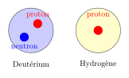
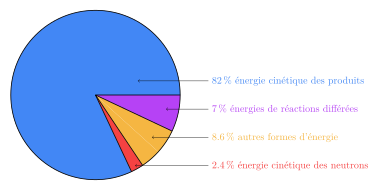

Fusion et fission nucléaire
Slides du cours
La relation d’Einstein
Introduction
Regardons la vidéo suivante de ScienceEtonnante:
Réponds aux questions suivantes:
- Quelle est l’équation la plus connue de la physique?
- Comment devrait-on écrie cette équation?
- Quelles quantités varient simultanément?
- Dans l’équation d’Einstein, que représente \(m\)?
- Dans l’équation d’Einstein, que représente \(E\)?
- Pourquoi dit-on qu’il y a une perte de masse dans un atome d’hydrogène?
- De quoi est composé un noyau d’hélium?
- Peut-on dire qu’il est possible de transformer de la masse en énergie?
La relation d’Einstein
C’est en 1905 qu’Einstein publia l’équation \(E=mc^2\), sur base de nombreux travaux d’autres scientifiques qui avaient déjà observé un lien entre l’énergie et la masse dans des situations particulières.
Décortiquons cette équation:
- cette équation parle de deux attributs \(E\) et \(m\) d’un corps supposé au repos;
- la lettre \(m\) fait référence à la masse de ce corps (au repos!), exprimée en kilogrammes \(\text{kg}\);
- la lettre \(E\) fait référence à l’énergie totale de ce corps (au repos!), exprimée en joules \(J\);
- la lettre \(c\) fait référence à la vitesse de la lumière dans le vide, qui est une constante universelle et vaut environ \(300 000\text{km/s}=3\cdot 10^8\text{m/s}\).
Dans cette équation, la masse est une mesure de la résistance du corps à se mettre en mouvement et n’est donc pas une mesure de la quantité de matière.
Comment interpréter cette équation? Elle nous dit qu’une variation de l’énergie d’un corps au repos correspond à une variation de la masse de ce corps. De plus, le facteur \(c^2\) qui lie ces variations entre énergie et masse fait qu’une variation de l’énergie correspond à une variation sensiblement plus petite de la masse (une variation environ \(10^{17}\) fois plus petite).
Voici un tableau donnant différentes variations d’énergie et la variation de masse correspondante:
| Énergie (J) | Exemple | Masse (kg) | Exemple |
|---|---|---|---|
| \(2,11 \cdot 10^{18}\) | Consommation totale d’énergie de la Belgique en 1 an | \(23,5\) | un enfant de 8 ans |
| \(9 \cdot 10^{10}\) | Énergie consommée par une personne en un an | \(1 \cdot 10^{-6}\) | un moustique |
| \(3,8 \cdot 10^{26}\) | Énergie émise par le Soleil en une seconde | \(4,2 \cdot 10^9\) | la grande pyramide de Gizeh |
| \(1 \cdot 10^6\) | Énergie cinétique d’une voiture à 100 km/h | \(1,11 \cdot 10^{-11}\) | dix cellules |
| \(8,368 \cdot 10^6\) | Énergie d’un repas de 2000 kcal | \(9,3 \cdot 10^{-11}\) | un dixième de grain de sable |
| \(1\) | Énergie pour soulever une pomme d’un mètre | \(1,11 \cdot 10^{-17}\) | une bactérie |
| \(2,9288 \cdot 10^6\) | Énergie dépensée lors d’une course de 10 km | \(3,26 \cdot 10^{-11}\) | 30 cellules |
Le défaut de masse dans la formation de noyaux
Nous avons vu dans la vidéo que la masse d’un noyau d’hélium n’est pas égale à la somme des masses des 4 nucléons qui le compose, à cause de l’énergie nécessaire pour la création de ce noyau. Analysons un autre exemple: celui du noyau d’un isotope de l’hydrogène, le deutérium.
Le noyau de cet isotope contient un proton et un neutron.

Voici un tableau résummant les valeurs des masses et du défaut de masse, ainsi que l’énergie correspondant à ce défaut.
| Élément | Valeur |
|---|---|
| Masse du proton (p) | \(1.67262 \times 10^{-27}\text{kg}\) |
| Masse du neutron (n) | \(1.67493 \times 10^{-27}\text{kg}\) |
| Somme des masses (p + n) | \(3.34755 \times 10^{-27}\text{kg}\) |
| Masse réelle du deutérium | \(3.34449 \times 10^{-27}\text{kg}\) |
| Défaut de masse | \(3.06 \times 10^{-30}\text{kg}\) |
| Énergie de liaison | \(2.75 \times 10^{-13}\) J |
Un noyau de deutérium est créé à partir d’hydrogène lorsqu’un proton capture un neutron. Ce processus peut se produire naturellement, mais à un taux très faible, ou être provoqué artificiellement dans des réacteurs nucléaires. L’équation de formation du deutérium peut s’écrire :
\[ ^1_1\text{H} + ^1_0\text{n} \rightarrow ^2_1\text{H} + \gamma \]
Cette réaction libère de l’énergie sous forme de rayonnement gamma, correspondant au défaut de masse.
Les réactions nucléaires
Introduction
Regardons la vidéo suivante de ScienceEtonnante:
Réponds aux questions suivantes:
- peut-on produire de l’énergie?
- de quoi a-t-on besoin pour faire une fission?
- combien y a-t-il de neutrons dans un noyau de magnésium 26?
- que doit-il se produire pour qu’une réaction de fission puisse s’auto-entretenir?
- quels noyaux permettent de créer des réactions de fission qui s’auto-entretiennent?
quels noyaux doit-on utiliser pour produire un noyau d’hélium par fusion?
qu’est-ce que la barrière énergétique?
La fission
Dans les centrales nucléaires, les réactions de fission sont causée par bombardement d’un noyau lourd par un neutron. Voici deux exemples de réaction par fission:
\[ ^{235}_{92}\text{U} + ^1_0\text{n} \rightarrow ^{236}_{92}\text{U}\rightarrow ^{95}_{38}\text{Sr} + ^{139}_54\text{Xe} + 2 ^1_0\text{n} + 3,2 \cdot 10^{-11}\text{J} \]
\[ ^{235}_{92}\text{U} + ^1_0\text{n} \rightarrow ^{236}_{92}\text{U}\rightarrow ^{92}_{36}\text{Kr} + ^{141}_{56}\text{Ba} + 3 ^1_0\text{n} + 3,2 \cdot 10^{-11}\text{J} \]
Pour chacune de ces deux réactions, l’énergie correspond au défaut de masse entre les produits de fission et le noyau de départ. Pour la réaction de fission de l’uranium-235, l’énérgie totale dégagée en moyenne est de \(3,2 \cdot 10^{-11}\text{J}\). Cette énergie se décompose de la manière suivante:

L’énergie récupérable par une centrale nucléaire est de l’ordre de \(95\%\), c’est-à-dire environ \(3,04 \cdot 10^{-11}\text{J}\). Ce nombre semble ridiculement petit mais est en fait énorme à grande échelle. Voici un tableau comparant les différentes manière de produire l’électricité nécessaire pour alimenter une maison pendant un an:
| Source d’énergie | Quantité nécessaire pour 1 an |
|---|---|
| Uranium (fission) | 17 g |
| Charbon (combustion) | 330 kg |
| Gaz naturel (combustion) | 300 m³ |
| Pétrole (combustion) | 270 litres |
| Panneaux solaires | envirion 15 panneaux solaires |
La fusion
Voici deux exemples de réactions de fusion nucléaire, faisant intervenir des isotopes de l’hydrogène:
- Fusion deutérium-deutérium \[ ^2_1 \text{H}+^2_1\text{H}\to ^3_2\text{He}+^1_0\text{n}+5,24 × 10^{-13}\text{J} \]
Dans cette réaction, l’énergie dégagée correspond aux énergies cinétiques des produits (75% pour le neutron et 25% pour le noyau d’hélium-3).
- Fusion deutérium-tritium (isotope de l’hydrogène avec 2 neutrons) \[ ^2_1\text{H}+^3_1\text{H}\to ^4_2\text{He}+^1_0\text{n}+2,82 × 10^{-12}\text{J} \]
Dans cette réaction, l’énergie dégagée correspond aux énergies cinétiques des produits (80% pour le neutron et 20% pour le noyau d’hélium-4).
Voici un tableau comparant les différentes réactions nucléaires, pour alimenter en électricité une maison pendant un an.
| Type de réaction | Éléments requis | Masse nécessaire pour 1 an |
|---|---|---|
| Fission | Uranium-235 | 17 g |
| Fusion D-T | Deutérium + Tritium | 0,04 g |
| Fusion D-D | Deutérium | 0,06 g |
Malheureusement, il n’est pas encore possible de réaliser de manière fiable et exploitable une fusion nucléaire. Les centrales à fusion sont encore en développement et présentent de nombreux défis. Un projet mondial, exécuté en France, essaye de développer un réacteur à fusion nucléaire: c’est le projet ITER. Voici une courte vidéo qui l’explique.
La fusion nucléaire est un phénomène fondamental qui alimente le Soleil. Cette réaction est la source principale de l’énergie solaire dont nous bénéficions sur Terre. Le processus de fusion dans le Soleil est si intense qu’il entraîne une perte de masse significative : environ 4,2 millions de tonnes par seconde sont converties en énergie.
Les réactions nucléaires au cœur du Soleil sont complexes et variées, formant des chaînes de réactions interconnectées. La chaîne proton-proton (PP) est la plus importante, représentant la majorité des réactions de fusion solaire. À titre d’illustration, voici les étapes principales d’une partie de la chaîne, qui débute par la fusion de deux noyaux d’hydrogène-1:
Ces réactions se produisent dans des conditions extrêmes de température (environ 15 millions de degrés Celsius) et de pression (la pression au coeur du Soleil est égale à 200 milliards de fois la pression atmosphérique terrestre) au coeur du Soleil.
Fusion et fission nucléaire – Cours de Physique Fusion et fission nucléaire – Cours de Physique Fusion et fission nucléaire – Cours de Physique Cours de Physique